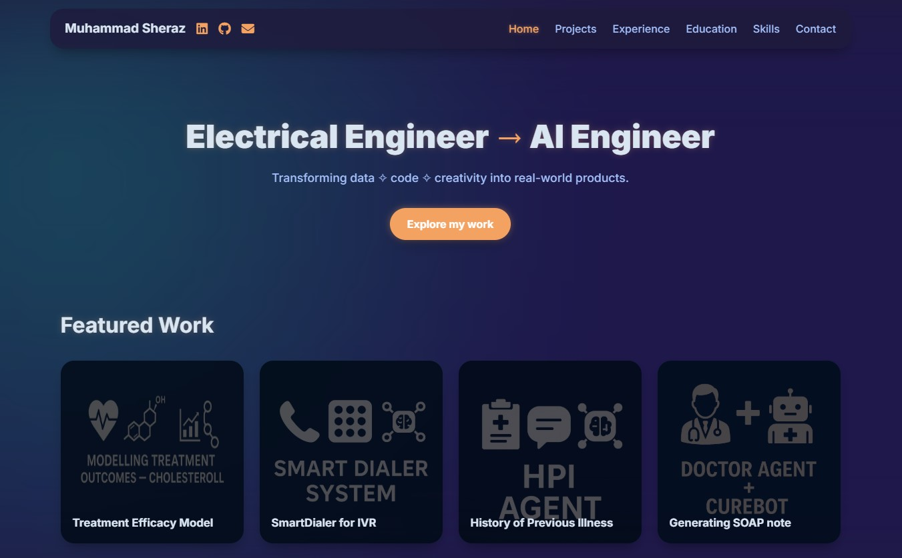
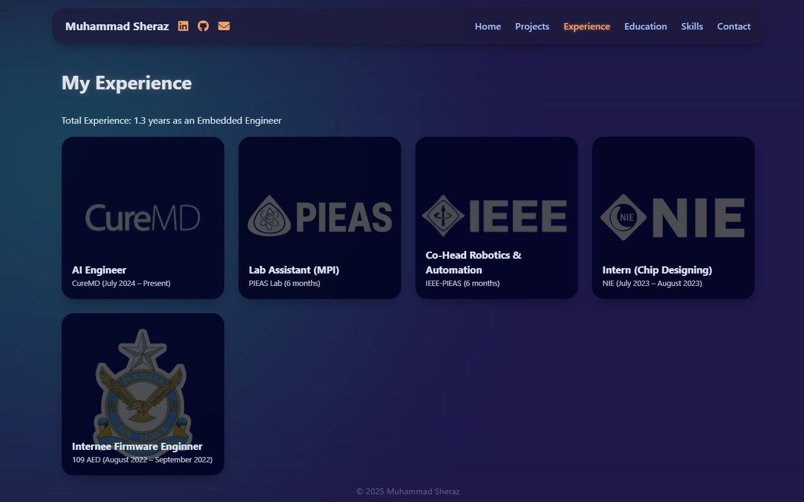

Portfolio Website — This Website
I built this Portfolio Website to showcase my projects and journey as an Electrical & Embedded Firmware Engineer. It’s a responsive, glassmorphism-themed site with subtle interactions that highlight work in embedded systems, robotics, and EV charging. The site is fully open-source and intended as a learning reference for others to use or fork.

1) Overview & Goals
Goal: A clean, mobile-friendly portfolio that communicates skills and experience clearly, with smooth interactions and fast load times.
- Single-page browsing with clear sections for Projects, Experience, Education, Skills, and Contact.
- Use of HTML, CSS, and lightweight JavaScript for speed and simplicity.
- Interactive details using Vanilla Tilt.js and Font Awesome icons.
- Easy hosting and updates via GitHub Pages.
2) Design & UX
The UI uses a soft glassmorphism aesthetic, readable typography (Inter), and consistent spacing. Components are designed with CSS variables for theme consistency and smooth transitions for hover/focus states. The navigation keeps visitors oriented across sections.
3) Development Process
- Planning: Sketched a single-page layout with top navigation, hero area, and a responsive project grid.
- Coding: Semantic HTML, modular CSS with variables, and JS for interactivity (Tilt and small utilities).
- Testing: Used browser dev tools to verify responsiveness across desktop, tablet, and mobile viewports.
- Deployment: Pushed to GitHub and enabled GitHub Pages for static hosting.
- Iteration: Added a dynamic footer year and moved libraries to trusted CDNs to improve performance.
4) Screenshots

5) What I Learned
- Web Basics: Structuring with HTML, styling with CSS, and enhancing interactivity with JavaScript.
- Responsive Design: Media queries and flexible layouts for a great mobile experience.
- Version Control: Git workflows (commits, branches) and deployment via GitHub Pages.
- Performance: CDN-hosted assets and minimal JS for faster load times.
- UX Thinking: Simple navigation, clear hierarchy, and visual polish to keep visitors engaged.
- Debugging: Resolved CSS conflicts and small JS issues while iterating on design.
6) Technical Features
- Responsive single-page layout with semantic HTML, modern CSS, and light JS.
- Glassmorphism surfaces and Vanilla Tilt.js for subtle 3D hover effects.
- Inter font + Font Awesome icons for readability and visual cues.
- GitHub Pages hosting for hassle-free deployment and updates.
- Dynamic footer year via a tiny JavaScript helper.
- Open-source: available for public use, learning, and contributions.
Status: Completed as of June 02, 2025 — and continuously refined as my work evolves.